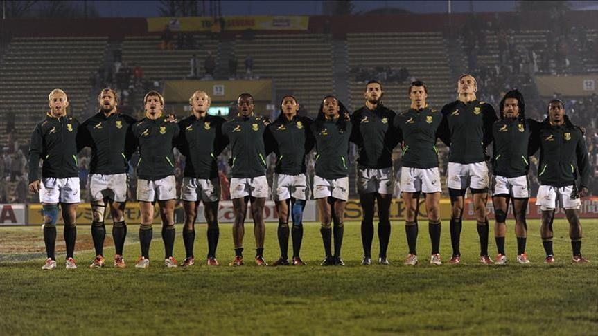
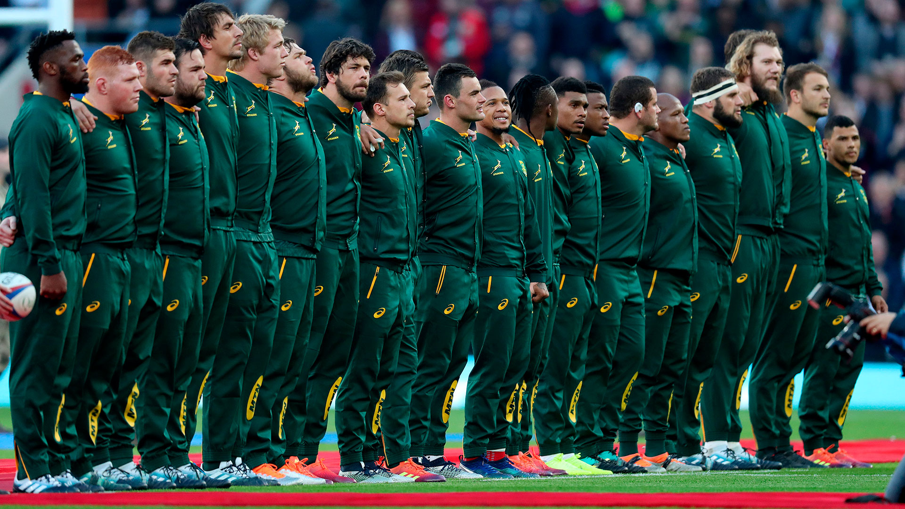

Los World Rugby Ranking son las clasificaciones de equipos nacionales de rugby, masculinos y femeninos. Gestionado por la World Rugby, órgano rector de este deporte. Los equipos de los países miembros de la WR se clasifican sobre la base de los resultados de su juego, con los equipos más exitosos que figuran en el puesto más alto. Se utiliza un sistema de puntos, y se otorgan sobre la base de los resultados obtenidos en los partidos internacionales.
Las clasificaciones se basan en el rendimiento de un equipo, con un mayor peso de los resultados más recientes y de los partidos más significativos para ayudar a reflejar el estado actual de la competencia de un equipo. El sistema de clasificación fue presentado el mes anterior del inicio de la Copa Mundial 2003, el primer ranking fue emitido el 8 de septiembre de 2003.
Líderes
Cuando se introdujo el sistema Inglaterra fue el mejor equipo y mantuvo esa posición tras la victoria en la Copa del Mundo de Rugby en 2003. Nueva Zelanda tomó el primer lugar el 7 de junio de 2004.
Después de ganar el Mundial de Rugby 2007, Sudáfrica se convirtió en el tercer equipo en alcanzar el primer lugar. Los dos primeros partidos del Tri Nations 2008 dieron lugar a los dos mejores equipos conmutando lugares: los All Blacks recuperaron el primer puesto tras derrotar a Sudáfrica en el partido Tres Naciones, el 5 de julio de 2008 en Wellington, y una semana después que los Springboks les devolvieron el favor en Dunedin, anotando su primer triunfo sobre los All Blacks de Nueva Zelanda desde 1998, reclamando el primer lugar, que los de negro obtuvieron por derrotar a Australia y Sudáfrica en agosto de 2008 recuperando el primer lugar por un margen considerable.
Luego Sudáfrica recuperó el liderato en julio de 2009 después de vencer a Nueva Zelanda en Bloemfontein y se mantuvo en la cima hasta que perdió ante Francia en noviembre de ese año, lo que permitió a los All Blacks recuperar el primer puesto. Nueva Zelanda ha sido el más consistente en el número 1 desde la introducción del ranking mundial IRB, tras haber ocupado la posición en el ranking durante casi tres cuartas partes del tiempo durante este período. Sudáfrica e Inglaterra completan el resto.